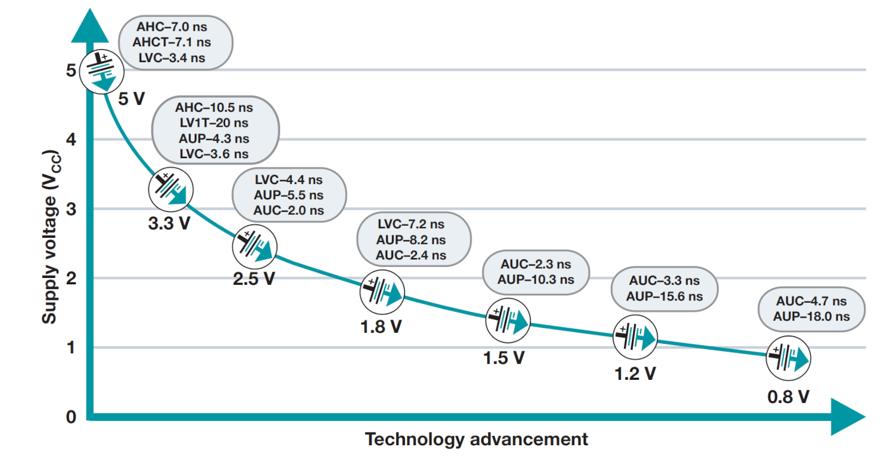

ความรู้เบื้องต้นเกี่ยวกับไอซีลอจิกมาตรฐาน#
Keywords: Standard Logic Gates, Digital Logic Gate ICs, 74xx Series
▷ Standard Logic IC#
ไอซีลอจิกมาตรฐาน (Standard Logic IC) คือ วงจรรวม (IC: Integrated Circuit) ที่มีวงจรอิเล็กทรอนิกส์อยู่ภายใน และทำงานตามฟังก์ชันเชิงลอจิก (Logic Function) ที่ได้กำหนดไว้แล้ว โดยทั่วไปแล้วก็เป็นฟังก์ชันระดับพื้นฐาน ในรูปแบบของลอจิกเกต (Logic Gate) เช่น NOT, AND, OR, NAND, NOR, XOR, XNOR เป็นต้น ไอซีมีขาสัญญาณอินพุตและเอาต์พุต เป็นสัญญาณดิจิทัล (มองว่า มีค่าเป็นลอจิก 0 =Low หรือ 1=High) และสามารถมีวงจรสำหรับลอจิกเกตประเภทเดียวกันได้มากกว่าหนึ่งตัวในไอซีตัวเดียวกัน
ไอซีลอจิกอาจมีฟังก์ชันที่ซับซ้อนกว่าลอจิกเกตพื้นฐาน เช่น วงจรเลือกสัญญาณขาเข้า หรือ "มัลติเพล็กเซอร์" (Multiplexer) วงจรเลือกสัญญาณขาออก หรือ "ดีมัลติเพล็กเซอร์" (Demultiplexer) และ วงจรแปลงโค้ดในรูปแบบต่าง ๆ (Encoder /Decoder) เป็นต้น
นอกจากวงจรลอจิกในประเภท "คอมบิเนชัน" (Combination Logic) ซึ่งเป็นวงจรที่ค่าของเอาต์พุตขึ้นอยู่กับค่าของอินพุตในขณะนั้นเท่านั้น ยังมีไอซีลอจิกสำหรับวงจรลอจิกที่มีหน่วยความจำขนาดหนึ่งบิต (หรือมากกว่า) เช่น "แลตช์" (Latch) และ "ฟลิปฟลอป" (Flip-Flop) วงจรเลื่อนข้อมูลบิตในรีจิสเตอร์ (Shift Register) วงจรตัวนับ (Counter) เป็นต้น
ตัวอย่างรายชื่อผู้ผลิตไอซีลอจิก (Logic IC Vendors) ทั้งในอดีตและปัจจุบัน
- Texas Instruments (TI)
- Philips Semiconductors / NXP Semiconductors / Nexperia
- Fairchild / On Semiconductor (OnSemi)
- STMicroelectronics
- Diodes Inc.
74xx เป็นชื่อของซีรีย์สำหรับไอซีลอจิก (Logic IC Series) หรือจะเรียกว่า ตระกูลของไอซีลอจิก (Logic Families) มีการกำหนดหมายเลข และฟังก์ชันลอจิกที่เกี่ยวข้อง (ดูรายการของไอซีในตระกูล 74HCxx) เช่น
- 7400 หมายถึง ไอซีลอจิกที่มีลอจิกเกต 2-input NAND (NAND2) จำนวน 4 ตัว (Quad NAND2 Gates) อยู่ภายในไอซีเดียวกัน
- 7404 หมายถึง ไอซีลอจิกที่มีลอจิกเกต NOT (Inverter) จำนวน 6 ตัว (Hex Inverters) อยู่ในตัวถังเดียวกัน
นอกจากการจำแนกตามฟังก์ชันของลอจิกเกตภายในไอซีแล้ว ยังมีการจำแนกตระกูลของไอซีลอจิกที่แตกต่างกันในประเด็นอื่นอีก เช่น ช่วงระดับแรงดันไฟเลี้ยงที่ใช้งานได้ และชนิดของทรานซิสเตอร์ที่เป็นพื้นฐานในการทำงานของวงจรภายใน เช่น TTL (Transistor-Transistor-Logic) และ CMOS (Complementary Metal-Oxide Semiconductor) ดังนั้นจึงมีการระบุชื่อไอซีลอจิกตามตระกูลและหมายเลข เช่น
- 74xx: Standard TTL
- 74HCxx: "HC" = High-speed CMOS
- 74HCTxx: "HCT" = High-speed CMOS, TTL Voltage Compatible Input
- 74LSxx: "LS" = Low-Power Schottky
ตัวอย่างตัวย่อสำหรับตระกูลของไอซีลอจิกยังมีอีก เช่น
- AUC (Advanced Ultra-Low-Voltage CMOS)
- AUP (Advanced Ultra-Low-Power)
- ALVC (Advanced Low-Voltage CMOS)
- AVC (Advanced Very-Low-Voltage CMOS)
- AC/ACT (Advanced CMOS / Inputs TTL-Compatible)
- AHC/AHCT (Advanced High-Speed CMOS / Inputs TTL-Compatible)
- LV-A/LV-AT (Low Voltage / Inputs TTL-Compatible)
- LVC (Low-Voltage CMOS)
รูป: ไอซี 74AHC00 Quad NAND2 Gate (Source: Diodes Inc.)
รูป: ไอซี 74AHC04 Hex Inverters (Source: Diodes Inc.)
รูป: ไอซี 74AHC08 Quad AND2 Gates (Source: Diodes Inc.)
รูป: ตัวอย่างไอซีที่มีลอจิกเกตเพียงตัวเดียวในตระกูล LV1Txx ของบริษัท TI (Source: TI)
รูป: ตัวอย่างไอซีที่มีลอจิกเกตสองหรือสามตัวเดียวในตระกูลและไอซีประเภท Signal Switch ของบริษัท TI (Source: TI)
ไอซีลอจิกในตระกูลที่แตกต่างกัน มีคุณสมบัติที่แตกต่างกัน เช่น
- ระดับแรงดันไฟเลี้ยงที่ใช้ (Operating Supply Voltage Range: VCC)
- ช่วงแรงดันสำหรับอินพุตและเอาต์พุต ซึ่งมีการกำหนดพารามิเตอร์ทางไฟฟ้าที่เกี่ยวข้องดังนี้
เพื่อจำแนกให้ได้ว่า แรงดันอินพุตหรือเอาต์พุตนั้น มีค่าเป็นลอจิก L (Low) หรือ H (High)
- (max) (Low-level Input Voltage): ระดับแรงดันอินพุต (ไม่สูงกว่า) สำหรับลอจิก L
- (min) (High-level Input Voltage): ระดับแรงดันอินพุต (ไม่ต่ำกว่า) สำหรับลอจิก H
- (max) (Low-level Output Voltage): ระดับแรงดันเอาต์พุต (ไม่สูงกว่า) สำหรับลอจิก L
- (min) (High-level Output Voltage): ระดับแรงดันเอาต์พุต (ไม่ต่ำกว่า) สำหรับลอจิก H
- ความสามารถในการรับหรือจ่ายกระแสที่ขาเอาต์พุต (Output Drive Strength มีหน่วยเป็น +/-mA)
- การรับกระแสไฟฟ้า (Current Sink): เมื่อขาเอาต์พุตเป็นลอจิก L ทำให้มีกระแสไหลเข้าที่ขาเอาต์พุตแล้วผ่านวงจรภายในของไอซีลงไปยัง GND ของวงจร
- การจ่ายกระแสไฟฟ้า (Current Source): เมื่อขาเอาต์พุตเป็นลอจิก H ทำให้มีกระแสไหลจากแรงดันไฟเลี้ยง VCC ผ่านวงจรภายในของไอซีไปยังขาเอาต์พุตและวงจรส่วนอื่นที่มองว่าเป็นโหลดไฟฟ้า
- ช่วงอุณหภูมิที่เหมาะสมต่อการทำงาน (Operating Temperature Range)
- กำลังไฟฟ้า (Power Consumption) แบ่งเป็นสองกรณีคือ Static และ Dynamic Power Consumption
- ความเหมาะสมในการนำไปใช้งาน เช่น Industrial, Automotive, Military
- ความเร็วในการทำงานของลอจิกเกต (Speed)
- ความล่าช้าของสัญญาณ (Propagation Delay: ) เมื่อจับเวลาตั้งแต่มีการเปลี่ยนแปลงลอจิกที่ขาอินพุตขาใดขาหนึ่ง จนเกิดการเปลี่ยนแปลงลอจิกที่ขาเอาต์พุต
- ความเร็วในการเปลี่ยนระดับลอจิกที่ขาอินพุตหรือขาเอาต์พุต (Transition Times หรือจำแนกเป็น Rise & Fall Times) เช่น จาก L-to-H () หรือ H-to-L ()
- ถ้าเป็นไอซีลอจิกประเภท "ฟลิปฟลอป" ที่มีการใช้สัญญาณ Clock มากำหนดจังหวะการทำงาน ก็จะมีพารามิเตอร์เชิงเวลาอื่นอีก เช่น ความถี่สูงสุดที่ทำงานได้ ช่วงเวลาที่สัญญาณข้อมูลจะต้องคงไว้ก่อนและหลังการเกิดขอบขาขึ้นของสัญญาณ Clock หรือ ระยะเวลาที่เรียกว่า Setup Time () และ Hold Time ()
รูป: ตัวอย่างแผนภาพเชิงเวลา (Timing Diagram) เมื่อมีการเปลี่ยนแปลงของสัญญาณอินพุต-เอาต์พุตสำหรับลอจิกเกตแบบ NOT และพารามิเตอร์เชิงเวลา และ
รูป: ตัวอย่างข้อมูลเกี่ยวกับลอจิกเกตในตระกูล CMOS ที่แตกต่างกัน (Source: TI)

รูป: แนวโน้มการลดระดับแรงดันไฟเลี้ยง VCC สำหรับไอซีลอจิกรุ่นใหม่ตามช่วงเวลาจากอดีตถึงปัจจุบัน (เอกสารอ้างอิง TI's Little Logic Guide 2018)

รูป: ตระกูลของไอซีลอจิกและช่วงแรงดันไฟฟ้าสำหรับอินพุต-เอาต์พุต และแรงดันไฟเลี้ยง VCC (เอกสารอ้างอิง TI's Logic Guide 2017)
ในการนำไอซีลอจิกต่างตระกูลกันมาต่อกันในวงจรเดียวกัน เช่น เชื่อมต่อสัญญาณจากขาเอาต์พุตของลอจิกเกตตัวหนึ่ง ไปยังขาอินพุตของลอจิกเกตอีกตัวหนึ่ง จะต้องดูว่าด้วย ไอซีลอจิกนั้นมีความเข้ากันได้ทางไฟฟ้า มิฉะนั้นอาจทำให้วงจรทำงานได้ไม่ถูกต้อง หรือ เกิดการชำรุดเสียหายได้ เช่น โดยทั่วไป ไอซีที่ทำงานด้วย VCC=3.3V จะไม่สามารถนำไปต่อเข้ากับไอซีที่ทำงานด้วย VCC=5V เป็นต้น ยกเว้นแต่ว่า จะมีการใช้วงจรเชื่อมต่อเพื่อปรับระดับแรงดันให้เข้ากันได้ (วงจรประเภทนี้เรียกว่า Voltage Level Shifter หรือ Voltage Translators)
จากรูปจะเห็นได้ว่า ตระกูลของลอจิกเกตที่แตกต่างกัน ก็มีช่วงระดับแรงดันไฟฟ้าสำหรับการทำงานที่แตกต่างกันได้ และสำหรับตระกูลใดตระกูลหนึ่ง ถ้าลดระดับแรงดันไฟเลี้ยงลง จะทำให้ค่าของ Propagation Delay (ns) เพิ่มขึ้น ซึ่งหมายความว่า ไอซีลอจิกจะทำงานได้ช้าลง (แต่ก็ช่วยลดลงการใช้พลังงานได้)
ถ้าพิจารณา 5V-TTL ที่ใช้แรงดันไฟเลี้ยง VCC=5V สามารถอ่านค่าพารามิเตอร์ทางไฟฟ้าได้ดังนี้
- ช่วงแรงดันเอาต์พุต: = 2.4V และ = 0.4V
- ช่วงแรงดันอินพุต: = 2.0V และ = 0.8V
- แรงดันแบ่งช่วง L กับ H: = 1.5V
- การเรียงลำดับของพารามิเตอร์จากต่ำไปสูง: < < < <
แต่ถ้าเป็น 5V-CMOS ก็สามารถอ่านค่าพารามิเตอร์ทางไฟฟ้าได้ดังนี้
- ช่วงแรงดันเอาต์พุต: = 4.4V และ = 0.5V
- ช่วงแรงดันอินพุต: = 3.5V และ = 1.5V
- แรงดันแบ่งช่วง L กับ H: = 2.5V

รูป: การตรวจสอบระดับแรงดันไฟฟ้าของขาอินพุตและเอาต์พุตที่เชื่อมต่อกันระหว่างลอจิกเกต (Source: TI)
จากข้อมูลในตารางเป็นการแสดงเงื่อนไขหรือความสัมพันธ์ เพื่อใช้ในการตรวจสอบว่า หากมีเอาต์พุตของลอจิกเกตตัวหนึ่ง (D) แล้วจะนำไปต่อที่ขาอินพุตของลอจิกเกตอีกตัวหนึ่ง (R) แต่ต่างตระกูลกัน จะทำได้หรือไม่ มีเงื่อนไขการตรวจสอบ และ เช่น
- D = 5V-CMOS (Output) นำไปต่อกับ R = 5V-TTL (Input): ทำได้
- D = 5V-TTL (Output) นำไปต่อกับ R = 5V-CMOS (Input): ไม่ถูกต้อง
- D = 5V-TTL (Output) นำไปต่อกับ R = 3V-LVTTL (Input): ทำได้ แต่ขาอินพุตจะต้องเป็น 5V input tolerance
คำแนะนำ: การนำไปไอซีไปต่อวงจร ขาอินพุตทุกขา ไม่ควรปล่อยลอย (Floating-Input) และแนะนำให้ต่อไปยัง VCC หรือ GND หรือต่อผ่านตัวต้านทานแบบ Pullup หรือ Pulldown
ไอซีลอจิกแต่ละหมายเลข อาจมีตัวถังของไอซีให้เลือกใช้ได้หลายแบบ เช่น
- PDIP (Plastic Dual Inline Package)
- SOIC (Small Outline IC)
- SOP (Small Outline Package)
- SSOP (Shrink Small Outline Package)
- TSSOP (Thin Shrink Small Outline Package)
รูป: ตัวอย่างของตัวถังสำหรับไอซีลอจิก (Source: TI)
▷ กล่าวสรุป#
บทความนี้ได้นำเสนอความรู้เบื้องต้นเกี่ยวกับไอซีลอจิกเกตมาตรฐาน ความแตกต่างของตระกูลของไอซีลอจิก ซึ่งมีให้เลือกใช้งานได้หลายตระกูลและจากหลายผู้ผลิต รวมถึงตัวอย่างการพิจารณาพารามิเตอร์ทางไฟฟ้าและเชิงเวลาของลอจิกเกต
This work is licensed under a Creative Commons Attribution-ShareAlike 4.0 International License.
Created: 2023-08-26 | Last Updated: 2023-08-26